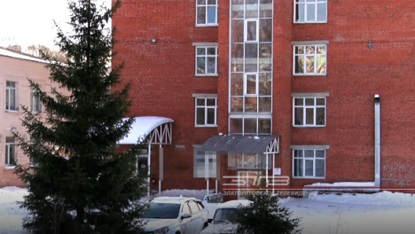

Все новости
Главная / Новости
02/02/2021
Выбрать рубрику

Благодаря поддержке предпринимателей. Златоустовские поликлиники оснастили холодильными установками для хранения вакцины
.png)
Госпитальная база закрыта, учреждение вернётся в «доковидный» режим после дезинфекции. Роддом Златоуста вновь откроет свои двери 8 февраля
.png)
Осторожно, сосульки! Оттепель на этой неделе привела к тому, что на крышах многих домов образовались опасные ледяные наросты
.png)
В четыре раза меньше вопросов, чем обычно. В Златоусте прошло первое в 2021-м году Собрание депутатов
.png)
В Златоусте сотрудники теротдела проверят магазин, из которого выбрасывали строительный мусор на контейнерную площадку
.png)

Госпитальная база закрыта, учреждение вернётся в «доковидный» режим после дезинфекции. Роддом Златоуста вновь откроет свои двери 8 февраля
Ещё одна главная новость дня — с 8 февраля златоустовский роддом возвращается к привычному формату работы. Госпитальную базу для лечения больных коронавирусной инфекцией переводят...